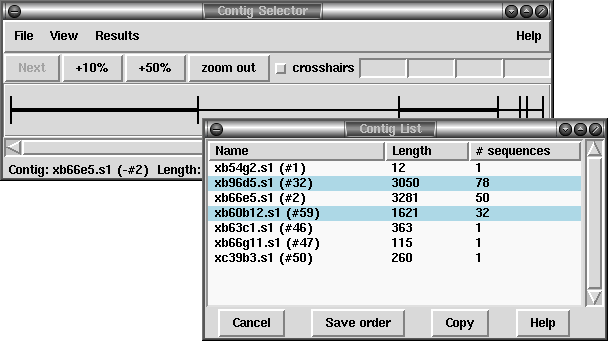

Contigs can be selected by either clicking with the left mouse button on the line representing the required contig in the contig selector window or alternatively by choosing the "List contigs" option from the "View" menu. This option invokes a "Contig List" list box where the contig names and numbers are listed in the same order as they appear in the contig selector window.

Within this list box the contig names can be sorted alphabetically on contig name or numerically on contig number. This is done by selecting the corresponding item from the sort menu at the top of the list box. Clicking on a name within the list box is equivalent to clicking on the corresponding contig in the contig selector. More than one contig can be selected by dragging out a region with the left mouse button. Dragging the mouse off the bottom of the list will scroll it to allow selection of a range larger than the displayed section of the list. When the left button is pressed any existing selection is cleared. To select several disjoint entries in the list press control and the left mouse button. The "Copy" button copies the current selection to the paste buffer.
Most commands require a contig identifier (which can be the name or number of any reading on the contig) and gap4 contains several mechanisms for obtaining this information from users. The names or numbers can be typed or cut and pasted into dialogue boxes (note that a reading number must be preceded by a # character, e.g. "#102" means reading number 102 but "102" means the reading with name 102).
Also any currently active dialogue boxes that require a contig to be selected can be updated simply by clicking on a contig in the contig selector or clicking on an entry in the "Contig Names" list box. For example, if the Edit contig command is selected from the Edit menu it will bring up a dialogue requesting the identity of the contig to edit. If the user clicks the left mouse button on a contig in the contig selector window, the contig editor dialogue will automatically change to contain the name of the selected contig. Some commands, such as the Contig Editor, can be selected from a popup menu that is activated by clicking the right mouse button on the contig line in the Contig Selector or clicking the right mouse button on the corresponding name within the "Contig List" list box. This simultaneously defines the contig to operate on and so the command starts up without dialogue.
Several contigs can be selected at once by either clicking on each contig with the left mouse button or dragging out a selection rectangle by holding the left mouse button down. Contigs which are entirely enclosed within the rectangle will be selected. Alternatively, selecting several contigs from the "Contig Names" list box will also result in each contig being selected. Selected contigs are highlighted in bold. Selecting the same contig again will unselect it.
The currently selected contigs are also kept in a 'list' named contigs.